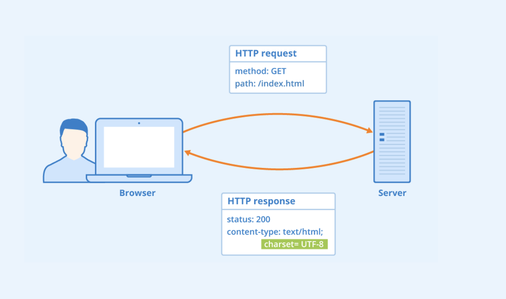

A successful GET request returns a response containing the resources requested. Resource meaning website, file, or whatever else you can GET on the internet.
Belongs at the top of an HTTPs request along with host URL and an endpoint path.
A successful post would receive a status response of 200.
Safe method: for information retrieval. Does not make modifications on the website.
The POST Method
Creates a new resource on a website/web-server
Requires a body (that we mentioned in the previous page) which defines the resource to be posted.
A successful post would receive a status response of 200.
Unsafe method: makes modifications/can have side-effects on a server. Other unsafe methods include PUT, PATCH and DELETE.
Summary

To summarise, HTTP is a transport protocol. It can transfer files, images, text, and applications. It is what
allows us to view/interact with things on the internet. Most websites consist of HTML, CSS and JavaScript to control
the user interface (what we see). It works in a client-server style relationship where a client
makes a request and receives a response from the server. Any computer can act as a client or a server,
or both. The most common methods are GET for information retrieval and POST for information sending.